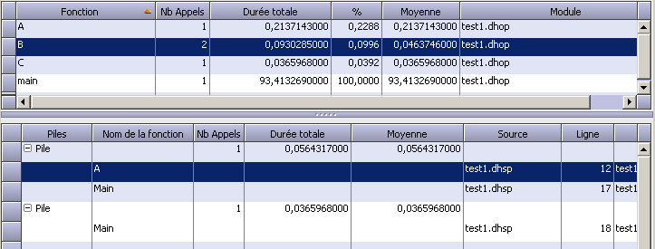
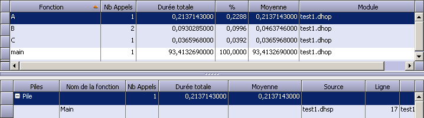

Un double-clic sur une ligne du tableau inférieur place le curseur dans le tableau supérieur sur la ligne correspondant à la fonction cliquée.
Soit :

Un double-clic sur la ligne A du tableau inférieur place la ligne courante du tableau supérieur sur A :

A chaque nouvelle navigation, les résultats de la navigation précédente sont gardés dans une liste. Les boutons Suivant et Précédent permettent de se déplacer dans cette liste.